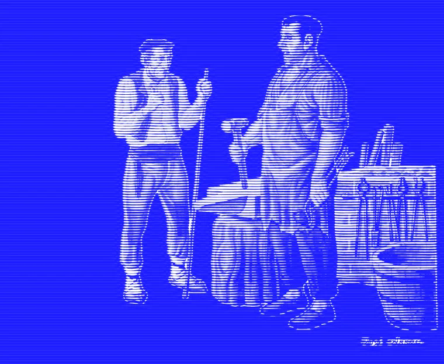
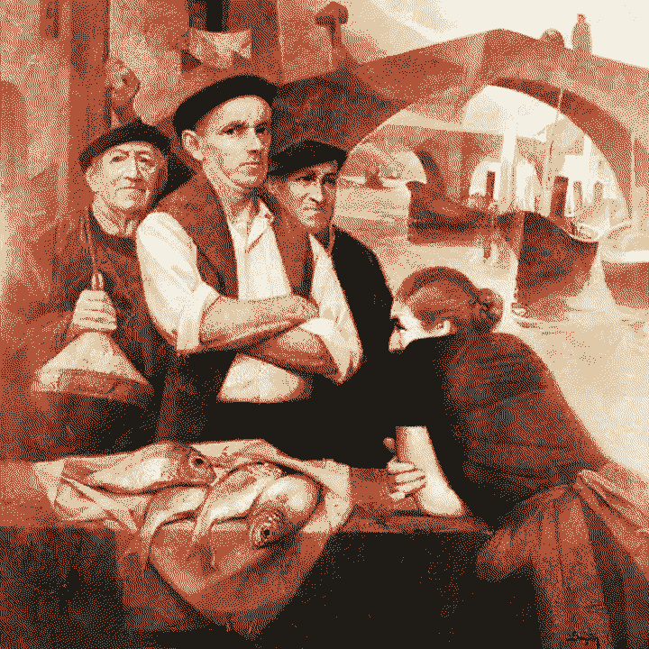
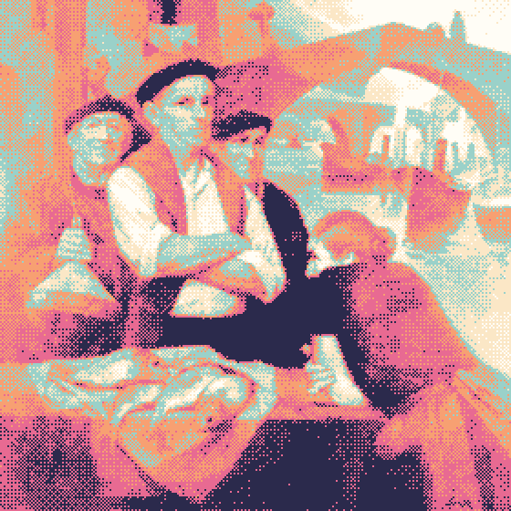
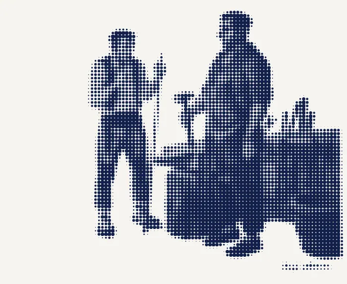

Hermes
Black and #1E1EFF blocks, huge condensed uppercase, mono labels, square buttons, engraved line-halftone hero and a lerp-damped cropped reveal & pan parallax.
hermes.html
Low-tech
Cream paper, a narrow serif column, heavily dithered four-colour images with their weight in KB, and a battery / status widget.
lowtech.html
Summer OS
A retro Mac OS desktop in pastel summer colours with draggable pixel windows, an effects panel and a Dither FM music player.
poolsuite.html
Gallery
Brutalist and irreverent: a masonry wall of treated works, giant type, stickers, a ticker and loud hover effects.
gallery.html
Studio
Refined minimal portfolio with large imagery and soft transitions, plus a springy hover Accordion and a before/after Compare slider.
aquirin.html
dith-er
Cinematic documentary: full-bleed grainy black-and-white stills, letterboxing, a running film strip and chapter navigation.
jeenyuhs.html
Schemas
Experimental data-art notebook: grids, annotations, kernel and Bayer diagrams, small multiples and seeded generative overlays.
schemas.html